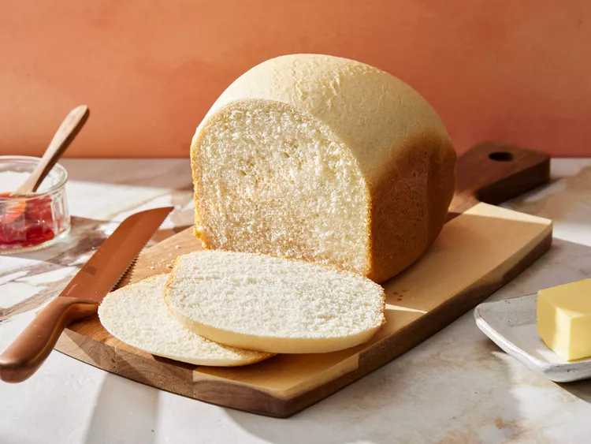

Bread

Description
This is a recipe for homemade bread.
This recipe yields a soft and fluffy loaf.
Ingredients
- Yeast
- Sugar
- Warm Water
- Flour
- Salt
- Butter
Steps
- Dissolve yeast and sugar in warm water. Let it sit until frothy.
- Add flour, salt, and melted butter to the yeast mixture and knead until smooth.
- Let the dough rise until doubled in size.
- Preheat the oven to 375°F (190°C).
- Shape the dough into a loaf and place it in a greased bread pan.
- Bake for 30-35 minutes or until the bread is golden brown and sounds hollow when tapped.
- Let the bread cool before slicing.
Back Home